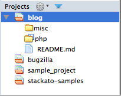

Projects
Komodo Projects are collections of settings and preferences that help you work with a particular set of files. These settings include:
- the base directory to display in Places
- links to additional directories
- links to files
- groups of file and directory links
- previously open files (optionally re-opened when the project becomes active)
- debugger preferences
- test plans
- language library paths
- mapped URIs
Projects Pane
The Projects pane at the bottom of the Places pane is the main interface to projects. It lists all open projects, showing the active project in bold.
Double-clicking on a project in this list will make that project active and switch the Places pane above to the base directory of the project.
Open vs. Active Projects
Multiple projects can be opened in the Projects pane to give you quick access to that project's file and directory links, but only one project (per Komodo window) is "active" at a time.
If the active project has saved debugger settings, test plans, library search paths, or mapped URI's, these settings will be enabled for all files that are part of that project.
File and Folder Links
Projects can contain links to files and folders on the local filesystem or on remote servers. Double-clicking on a file link opens it in an editor tab. Double-clicking on a folder link opens it in the Places pane above.
Project Groups
Groups are named virtual containers for files and folders. You can use them to organize items for quick access which might be in disparate locations. Groups are not actual direcories, they just contain links to files and folders (or sub-groups).
Project Menus
Projects menus are available in the main toolbar, the Projects pane toolbar and as a right-click context menu. The toolbar menus operate on the active project and the context menu operates on the selected project.
Each menu offers a different list of options, but there is some overlap. The following options are available:
- Show in Places: Changes the Places pane to the base directory of the project without making it the active project.
- Open Project: Opens a diolog for choosing a .komodoproject file to open. The project is opened in the pane and becomes the active project by default.
- New Project: Creates a new project, then opens it and makes it active.
- Close Project: Removes the selected project from the Projects pane.
- Close All Projects: Removes all projects from the Projects pane.
- Save Project: Saves the current project properties to the ".komodoproject" file.
- Save Project As...: Saves a copy of the current project with a different name (or in a different location), then makes the new project active.
- Rename Project...: Renames the current project.
- Open Project in New Window: Each Komodo window can have only one active project at a time. This feature opens a new Komodo window with the selected project active, allowing you to work with multiple projects silmultaneously.
- New Project: Opens the filesystem browser to select the location and name of a new project. The project preferences and settings are stored in a ".komodoproject" file. The directory selected becomes the base directory for display in Places.
- Refresh Status: Updates the filesystem and source code control status of all files and directories in the project.
- Add: Add files folders and groups.
- New File: Add a new file to the project or folder (depending on context or selection).
- New Group: Add a new named group of folders or files.
- Existing File: Select a file to include in the project, folder or group.
- Existing Folder: Select a filesystem folder to include in a project or group.
- Existing Remote File / Folder: As above, but using the remote filesystem browser.
- Source Code Control: A sub-menu of SCC actions. (Komodo IDE only)
- Publishing: A sub-menu of Publishing actions. (Komodo IDE only)
- Show in File Manager: Open the selection in the system's default file manager.
- Remove: Remove the selection from the project.
- Properties: Opens the Properties and Settings dialog for the current or selected project.
Project Properties and Settings
Komodo has preferences at the file, project and global level. File preferences take precedence over project preferencs which take precedence over global preferences. When a project is active, it's settings override global preferences wherever there is overlap.
Project settings include the following sub-set of the global preferences: